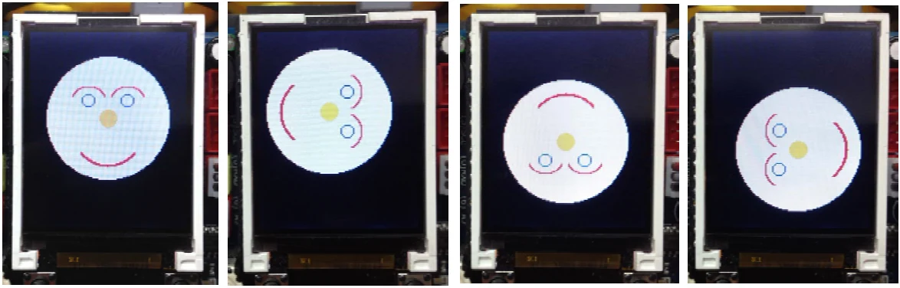

Activity 1-5 : Draw the curve
Except the circles and rectangle, the curve is a key component in creating graphics. In glcd function also provides a function to create the curve. It is glcdArc(). The parameter that must be reasonable. See more detail in chapter of the GLCD library.
(A1.5.1) Open the Arduino 1.0.7 software. Create the new sketch file. Type the code following the Listing A1-5. then save as the sketch.
(A1.5.2) Apply the supply voltage to the ATX2 board and turn on power. Connect the USB cable between ATX2 board and computer.
(A1.5.3) Compile and upload the sketch to ATX2 board by clicking on the
button or choose at menu File > Upload
#include <ATX2.h>
int i;
// Smiley face graphic function
void face()
{
glcdFillCircle(64,70,50,GLCD_WHITE);
glcdArc(48,60,16,30,150,GLCD_RED);
glcdCircle(48,55,5,GLCD_BLUE);
glcdCircle(80,55,5,GLCD_BLUE);
glcdArc(80,60,16,30,150,GLCD_RED);
glcdFillCircle(64,70,7,GLCD_YELLOW);
glcdArc(64,80,30,220,320,GLCD_RED);
glcdArc(64,80,29,220,320,GLCD_RED);
}
void setup()
{
//glcdSetColorWordRGB(); // Enable this function if displaying color
// incorrect
}
void loop()
{
for(i=0;i<4;i++)
{
glcdClear();
glcdMode(i); // Rotate displaying
face();
sleep(1000);
}
}(A1.5.4) Run the sketch. See the ATX2 board operation.
The display shows a smiley face for 1 second and turn it each 90 degrees respectively and then loop back to the start page. The display will go all the time.

Original manual, pages 106–107